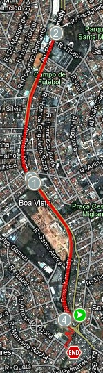

vamo, vamo, vamo…
Ex-sedentário
Primeira Corridinha
07 years
by Alecão
in Ex-sedentário
Ontem, era sábado e veio a oportunidade de treinar na parte da manhã, como meus filhos dormiram fora de casa, eu e minha mulher fomos tomar café da manhã em uma padaria, já saí de casa com a roupa para treinar.
Estava muito frio e aos poucos a empolgação para treinar foi diminuindo. Ao sair da padaria, uma garoa fina caía na cabeça. Falei para minha mulher, me deixe em casa… E ela, “não, você vai treinar”. Como dizer não depois dessa, foi o empurrão que eu precisava. Então ela me deixou no início do trajeto e foi embora.
Estava muito frio, pensei, vou correr para esquentar os ossos e parti já em um rítimo acelerado para ao qual estou acostumado e não parei mais. O corpo foi esquentar apenas aos 20 minutos de treino, quando o trotar começou a ficar prazeroso.
A sensação é muito boa e nessas horas vem na cabeça: Por que enrolo tanto para voltar a treinar?
Fui até o ponto que eu já sei que era meu limite para o momento e voltei, conseguindo correr até outro ponto em que pensei, chega por hoje Alex. E continuei andando até chegar em casa. Foram 34 minutos de corrida e mais 6 andando num total de 4,3 Km.
Hoje com um pouco de dor na pernas resolvi maneirar e fui com a família em uma rua de lazer. Os 4 caminharam por 28 minutos. Interessante que a mulher e filhos estão embarcando nessa comigo.
Garoto TAEQ – Alecão brilhando na Maratona do Pão de Açucar – Sucesso do blog Ex-sedentário
37 years
by Claudião
in Ex-sedentário
A noticia é velha. Mas foi dada pelo discreto e comedido Alecão.
Auto lá com essa discrição toda. Os amigos e o mundo todo precisam saber: graças ao seu estrondoso sucesso o Alecão foi encontrado no blog e procurado reservadamente para fazer parte de um time especial da Taeq.
Conforme está escrito no hot-site da Taeq: Você também vai conhecer o dia a dia de uma equipe que Taeq reuniu e está ajudando a prepará-los para participar dessa maratona. (negritei o que interessa)
“chique no úrtimo”, como se fala em Presidente Prudente, o criador da nossa comunidade/equipe está fazendo parte de um time que está sendo preparado para a Maratona de Revezamento. E essa preparação está sendo registrada passo a passo no site da Taeq.
Já tem dois posts do Alecão, que estão me deixando com um ciúmes danado, mas sei que a fama não subira a cabeça, não do Alecão. O cara é íntegro. Do tipo mesmo que não se deixa levar pelo sucesso momentâneo. Eu fiquei tão feliz, mas tão feliz com esta oportunidade dele, que consegui até voltar a fazer dieta. Mais do que nunca (o Faustão já emagraceu mais do que eu) eu vou treinar firme e incentivar o meu melhor amigo a realizar o sonho da São Silvestre. Vamos lá Alecão! Vamo, vamo, vamo…
Acompanhem no site e aqui no blog a saga do Alecão, que deixará a equipe Ex-sedentario na Maratona de Revezamento por um motivo nobre e uma oportunidade legal.
E viva o blog Ex-sedentario!!! E viva o Alecão.
Taeq… Isto me lembrou a última corrida Pão de Açucar Kids. Quem correu foi o Henrique e eu que voltei pra casa dois quilos mais gordo de tanto comer os lanchinhos oferecidos a lá vontê aos acompanhantes dos atletas mirins. Guarde um lanchinho para mim, falou Primão?
‘
O Alecão agora é garoto
Vamo, vamo, vamo…
47 years
by Claudião
in Ex-sedentário
Não conseugui realizar o meu desafio do dia de ontem. Peço escusas (ih, expressãozinho feia) pelas expectativas que criei nos amigos. Não deu. Poderia discorrer aqui uma séria de justificativas. Mas faz parte de um exercício, a partir de agora não me lamentar mais pelo leite derramado. Vamos ver até onde eu consigo ir sem lamentar, muito, gente. Sem lamentar muito.
Então, conforme a nova palavra japonesa que aprendi com a Professora de Japonês mais legal e mais Kitigai que conheço (e como foi legal conhecê-la) Mayumi: vamukivamu, que li escrito no blog da Dona D.
Vamukivamu que estou trabalhando duro e passando fome para retomar a forma física que eu estava dois meses atrás. Hoje consegui trotar meia hora antes de chegar propriamente na academia de musculação (um mês demora, gente?).
Um grande abraço a todos.
Segunda caminhada
17 years
by Alecão
in Ex-sedentário
Ontem eu fiz outra caminhada, desta vez mais leve, porque na primeira eu consegui ganhar bolhas no pé. Claro que o problema era o calçado não adequado, justo eu que sempre me atento a estes detalhes, mas desta vez me deu branco.
Foi uma caminhada de 40 minutos, menos que eu esperava, mesmo assim gostei de faze-la.
Tenho caminhado a noite e a partir de amanhã pretendo mudar os treinos para de manhã. Pretendo também começar a trotar.
Hoje eu corro 4km nem que seja de terno ou a última coisa que eu faça nessa minha gorda (e feliz) vida.
57 years
by Claudião
in Ex-sedentário
18ª Maratona Pão de Açúcar de Revezamento
87 years
by Alecão
in Ex-sedentário
 É pessoal, mais um desafio, participar de uma equipe de 8 pessoas na 18ª Maratona Pão de Açúcar de Revezamento.
É pessoal, mais um desafio, participar de uma equipe de 8 pessoas na 18ª Maratona Pão de Açúcar de Revezamento.
Já tinha planos (de tanto o Claudio falar) para participar, mas acontece que este ano tenho um empurrãozinho a mais, pois estou na EQUIPE TAEQ. Convido a todos a acompanharem meus posts pelo hot-site da TAEQ.
Novamente um recomeço
17 years
by Alecão
in Ex-sedentário
Desde uma prova de 6 quilômetros no começo do ano, não estava conseguindo estabelecer uma rotina de treinos.
Olha que foram várias tentativas, primeiro tentei em março, mas ficou só em um simples treino. Um mês depois mais uma tentativa. Passou 2 meses até o outro treino em junho e depois disso encarei uma subidona sem estar treinado e ainda por cima gripado.
Foram treinos com um espaço de tempo muito grande entre um e outro. São recaídas de quem vem tendo problemas emocionais desde a visita ao médico, difícil entender o funcionamento de nossa cabeça.
Mas agora é diferente, tenho uma equipe para ajudar e preciso estar preparado. E hoje foi o start de todo o processo. Como estava parado a muito tempo, preciso começar devagar e esperar para que a “memória muscular” venha.
Comecei então com uma caminhada de 4 quilômetros que duraram 50 minutos. Foi um trajeto de aclive para ajudar na musculatura da perna.
Agora que comecei não vou parar mais e que venha os próximos treinos.
Um ano de blog
97 years
by Alecão
in Ex-sedentário

Ontem foi meu aniversário e isso me fez lembrar que faz 1 ano que o blog Ex-Sedentário está no ar.
Tudo começou como uma vontade antiga de criar um blog sobre motivações em esporte, até que um dia tive uma conversa com o Claúdio pelo Messanger, que rendeu o primeiro post deste blog isso aconteceu no dia 05 de agosto do ano passado. Mas não adiantava criar o blog e deixar a intenção, foi quando o Claudio veio com a idéia de um desafio a se realizar no dia do meu aniversário. E assim no dia 8 de agosto do ano passado temos o primeiro post sobre um treino que fizemos juntos.
Na seqüência o primeiro solo do Cláudio e eu vários dias depois o meu.
Conversa vai, conversa vem com um colega de trabalho, incluímos mais um membro além dos 2 primos, o Thiago, no dia 28 de setembro do ano passado. Que a tempos havia parado, mas ao ler os testemunhos dos primos resolveu apostar na idéia de treinar e divulgar.
Em 6 de janeiro, tivemos a inclusão de um novo membro. O Luciano, também meu colega de trabalho, ficou parado um tempo e recentemente voltou aos treinos.
Ai o clube do bolinha acabou com a entrada da Ana. Que é colega de trabalho do Claudio e este de tanto tagarelar a incutiu o desejo de treinar e blogar.
Assim temos o nosso time com 5 membros que carregam a bandeira do Ex-Sedentário.
Fico muito feliz que a idéia se concretizou, que alguns tenham começado e não largado mais, outros tiveram suas recaídas e se recuperaram, outros estão nos passos iniciais. Essa idéia que tinha por fim ajudar a mim e aos outros.
A surpresa desse período de um ano para mim, foi ver como fizemos muitos amigos corredores/blogueiros. Fiz amigos em provas. Não tinha idéia desta dimensão que o blog teria. Não sabia desta preocupação que os “corredores” tinham com cada um que está começando. Adorei isso e por isso valeu e vale manter este blog.
Quero agradecer a todos que visitam o nosso blog. Muito Obrigado.
Garanta o seu treino (e tenha sono depois)
77 years
by Claudião
in Ex-sedentário
Eu me mantive ativo durante a semana. Mesmo com o horário apertado, comecei a fazer musculação numa academia a duas quadras de casa, academia simplezinha, mas engraçadinha, como eu. Defintivamente, eu não gosto de musculação e não gosto de academia, mas seguirei firme por este mês. Será bom. Na verdade, terá de ser.
Hoje eu acordei as 03:30 horas. Não foi para treinar, foi de frio mesmo, porque meu filho no meio da noite tira todas as cobertas. Não dormirá mais com a gente. Levantei para ajeitar as cobertas e me lembrei do Livro de Dean Kernazes, dizendo para ficarmos atentos e garantir o treino do dia. Eu já estava preocupado, quase estressado, pensando que o único horário que poderia treinar seria entre as 14:00 e 16:00 horas. Será que conseguiria? Como eu ainda estava de pé, pensando nisso tudo resolvi garantir o meu treino. Incrível como nessa hora todo tipo de dúvida nos testa a perserverança, desde a roupa, o percurso, o perigo de sair na rua aquele horário etc. Demorei 1H até conseguir chegar na rua (recorde em demora) Mas fui. Na rua, ganhei confiança e segui no meu Pirituba Trote Tour, sem pensar em nada, muito menos em quilometragem. Trote levíssimo por 01h35min. Comecei às 04:30 horas. Acordei a esposa para o compromisso dela às 06:45 horas. Banho tomado, pães quentinhos, café coado e corpo treinado. Agora, 08:16 horas, o Henrique está cheio de gás, literalmente com a corda toda e eu, com sono. Muito sono.
.jpg "DSC01713 (576x1024)")
.jpg "DSC01748 (576x1024)")
.jpg "DSC01815 (1024x576)")
.jpg "DSC01860 (1024x576)")
.jpg "DSC01861 (1024x576)")
.jpg "DSC01944 (1024x576)")


{kind=link}
{kind=link}
Últimos comentários